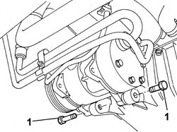
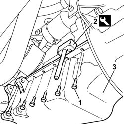

1020A26 CRANKCASE SUMP - R R CLEAN MATING SURFACES AND APPLY SEALANT FOR VEHICLE WITH AIR CONDITIONER
- Path
- Procedures > 10 ENGINE UNIT > 1020 CRANKCASE SUMP AND COVERS > 1020A CRANK CASE OIL SUMP > 1020A26 CRANKCASE SUMP - R R CLEAN MATING SURFACES AND APPLY SEALANT FOR VEHICLE WITH AIR CONDITIONER
- Kind
- repair procedure (removal / refitting; the operation number is the code)
- Applies to
- engines: 2.0 16V; all production periods
- Interactive page
- https://sloeber94.github.io/elrnDB-fDct/en/#/244000656
Applies to: engines: 2.0 16V; all production periods
 Removing
Removing
 Refitting
RefittingOp. 7055B54 UNDER-ENGINE GUARD - R R
Op. 1092C11 POWER STEERING PUMP DRIVE BELT - R R FOR VERSIONS WITH AIR CONDITIONER
Op. 1092B40 AIR CONDITIONER COMPRESSOR/ALTERNATOR DRIVE BELT - R + R
Op. 1024B54 ENGINE FLYWHEEL PROTECTION R R
See in Op. 1020A30
1. Undo the bolts fixing the air conditioning compressor and move it away from the work area.

Applies to: engines: 2.0 16V; all production periods
1. Undo the bolts fixing the crankcase sump.
2. Cut the sealant between the oil sump and the crankcase using a special tool.
3. Remove the oil sump.
 | Description | Code | Function |
|---|---|---|---|
3 | Blade | 1.870.718.000 | Cut sealant |

Applies to: engines: 2.0 16V; all production periods
Refitting
Removing- Clean the matching surfaces between the oil sump and the cylinder block/crankcase.
- Apply silicon sealant to the oil sump fitting surface.
- Place the oil sump in position without axial movements.
- Tighten the bolts fixing the oil sump and check the torque.
- Fit the compressor in place and tighten the fixing bolts checking the torque.
See in Op. 1020A30
Op. 1024B54 ENGINE FLYWHEEL PROTECTION R R
Op. 1092B40 AIR CONDITIONER COMPRESSOR/ALTERNATOR DRIVE BELT - R + R
Op. 1092C11 POWER STEERING PUMP DRIVE BELT - R R FOR VERSIONS WITH AIR CONDITIONER
Topics linked from this page (5)
- 0010T10 ENGINE OIL CHECK LEVEL AND TOP UP
- 1024B54 ENGINE FLYWHEEL PROTECTION R R
- 1092B40 AIR CONDITIONER COMPRESSOR/ALTERNATOR DRIVE BELT - R + R
- 1092C11 POWER STEERING PUMP DRIVE BELT - R R FOR VERSIONS WITH AIR CONDITIONER
- 7055B54 UNDER-ENGINE GUARD - R R